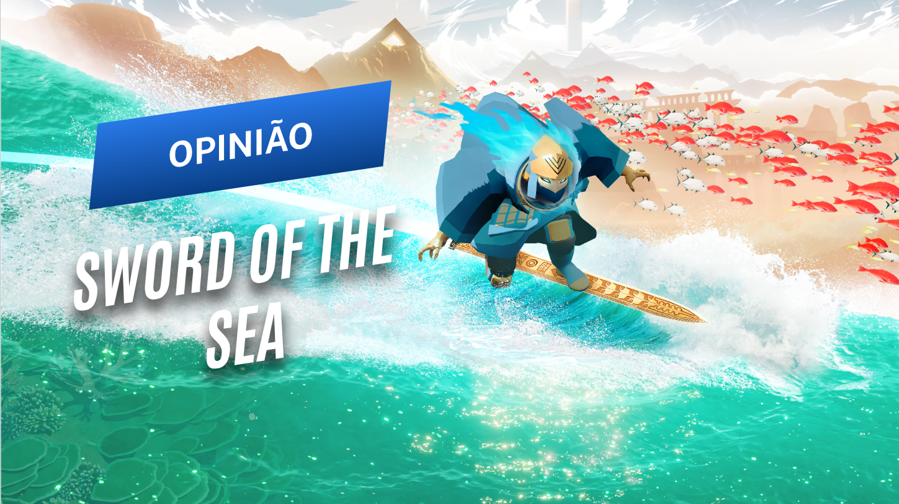

2 artigos publicados.
Uma seleção de experiências independentes que ficaram fora do radar — mas não deveriam.
Uma jornada breve e contemplativa, conduzida por beleza, movimento e uma trilha sublime.
